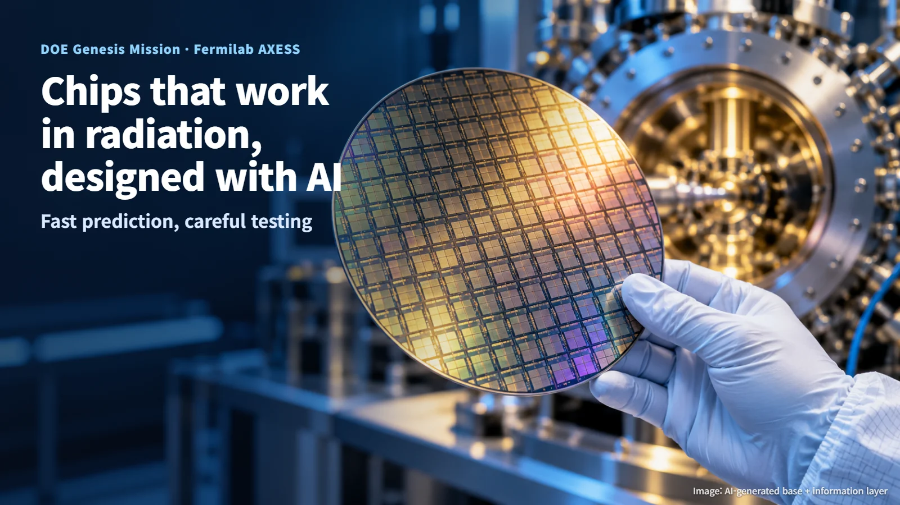
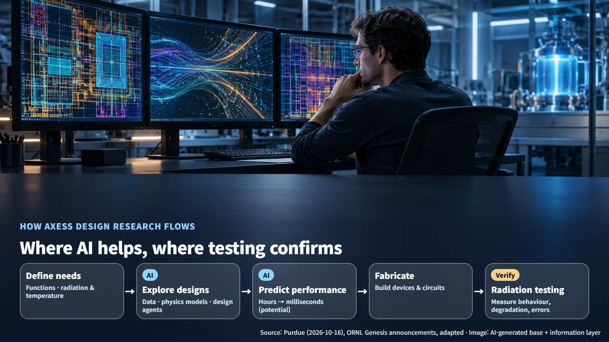
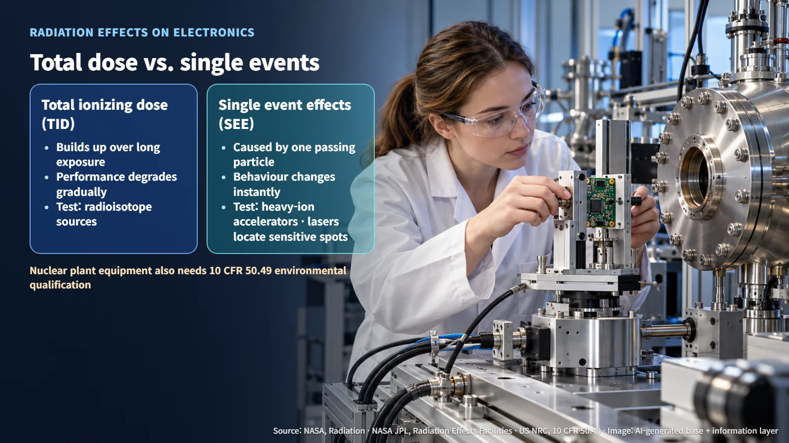

United States · Radiation-Tolerant Electronics
Designing Chips That Keep Working in Radiation, with Help from AI: DOE's Genesis Mission and AXESS
DOE's Genesis Mission is funding Fermilab-led AXESS to speed up the design of chips for intense radiation and cryogenic environments, while radiation testing and equipment qualification confirm the results.
Places with intense radiation, such as nuclear reactors and fusion devices, still depend on electronic circuits that read and process signals. When semiconductors are exposed to radiation, their performance can slowly degrade, or their behaviour can change in an instant. So how are chips for these extreme environments built, and how do engineers confirm that they work as intended? Let's follow one research project that the US Department of Energy recently chose to fund and trace that process step by step.

The Second Round of Genesis Awards and AXESS
On October 8, 2026, the US Department of Energy (DOE) announced a total of $159 million for 12 new Phase II projects under the Genesis Mission, and it also added 6 Phase I projects. On October 21, the American Nuclear Society (ANS) reported the news with a focus on applications in fusion and high-radiation environments. The amount is the combined total for 12 projects across all fields of science; the budget for the nuclear-related projects alone has not been disclosed. Together with the existing GridFM 2.0 and Prometheus, there are now 14 Phase II projects in all.
The ANS report highlights three projects that touch nuclear energy and fusion. Commonwealth Fusion Systems (CFS) plans to build an AI digital twin (a virtual model of a real machine running inside a computer) that simulates and optimises the operation of its SPARC fusion device. A project led by Northeastern University is developing an AI assistant to support the operation and tuning of the particle separator at FRIB, a rare isotope beam facility. AXESS, led by Fermi National Accelerator Laboratory (Fermilab), aims to shorten the design process for semiconductors that must operate under intense radiation or at cryogenic temperatures. All three projects are currently at the stage of having received development funding; their accuracy and range of application will be established through future testing and demonstration. The individual award for AXESS and any commercial deployment schedule have not been disclosed.
What AI Does in Chip Design
The chips AXESS works on are ASICs, application-specific integrated circuits custom-designed for a particular purpose. If a general-purpose chip is a multi-tool that handles many jobs reasonably well, an ASIC is closer to a dedicated tool shaped for a single task. The participating institutions list particle detectors, readout and control of quantum devices, and accelerator and fusion hardware as the intended applications.
Purdue University explained that the team of participating researcher Mia Liu aims to cut the time it takes to go from a scientific instrument's requirements to a working electronic circuit. According to Purdue, AI has the potential to predict chip performance in milliseconds, replacing evaluations that used to take hours. This time saving applies to the performance-prediction step; the overall development time will be judged by the results of design verification, fabrication, measurement and redesign. The same announcement described Smart Pixel, an approach that places a small neural network inside the detector to process data on the spot and reduce the volume of data that must be transmitted.
Oak Ridge National Laboratory (ORNL) has described a direction that links materials, devices, circuits and architectures through experimental data, physics models and design agents. The AI that evaluates candidate designs and the AI that processes data inside the chip will each be verified against defined inputs, outputs and performance metrics.

How Radiation Affects Chips: Cumulative Dose and Single Events
NASA describes the radiation effects on electronic parts in terms of total ionizing dose (TID), total non-ionizing dose (TNID) and single event effects (SEE). NASA's Jet Propulsion Laboratory (JPL) sorts these into two branches. One is the cumulative effect, in which radiation builds up over a long time and performance gradually declines. The other is the effect of individual particles, in which circuit behaviour changes the moment a single particle passes through. The first is like a plastic object left in the sun that slowly fades; the second is closer to the instant a small pebble strikes a window pane.

Test methods are matched to each effect. JPL describes TID testing with radioisotope sources and SEE testing with heavy-ion accelerators. Laser testing is used to locate sensitive spots on a chip and to analyse what happens there. NASA's radiation hardness assurance (RHA) approach starts from defining the environment and continues through part selection and testing to placement and radiation-hardened design. Through the MEAL concept, which considers Mission, Environment, Application and Lifetime together, it connects test figures to real operating conditions. This methodology has been used in space electronics.
Using These Chips in Nuclear Plants: Radiation Testing and Equipment Qualification
Electrical equipment installed in US nuclear power plants must pass a separate qualification gate. Environmental qualification under the US Nuclear Regulatory Commission's (NRC) 10 CFR 50.49 applies to safety-related electrical equipment, certain non-safety-related equipment and post-accident monitoring equipment. The rule covers temperature, pressure, humidity, chemical environment, radiation, aging, submergence, synergistic effects and margins, and the radiation conditions include both the normal environment over the installed life and the accident environment, along with dose-rate effects. Qualification is demonstrated through a combination of testing and analysis, and it must be maintained in auditable records.
The materials published so far by the participating institutions describe research goals and design-support methods. Radiation test results for any specific chip, and the qualification of any specific nuclear plant component, can be assessed once those results are released. The points to watch from here are the baseline performance and error of the prediction models, the conditions and results of extreme-environment testing, and the re-verification data after design changes.
AI takes on the role of quickly screening candidate designs, while radiation testing and environmental qualification confirm those results under real conditions. When fast prediction and careful testing work hand in hand, we move one step closer to chips that can be trusted to keep working in radiation.